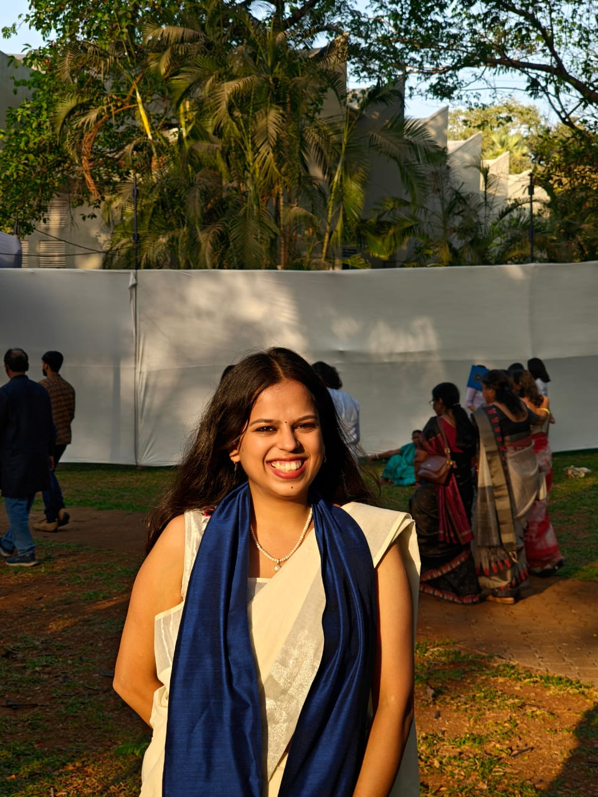

Sustainability Enthusiast Research, Policy & Action
Vaishnavi Gupta
Environmental Researcher | Sustainability Professional | Environmental Policy
Prospective PhD researcher
I am a sustainability professional interested in understanding how environmental technologies and public policy can work together to enable more sustainable and resilient societies.

Research Keywords
Sustainability · Environmental Policy · Environmental Management · Wastewater Treatment · Nature-Based Solutions · Emerging Pollutants · Water–Energy–Food Nexus · Sustainability Transitions · Science–Policy Interface
Explore
Where to go next
About
Background, education, academic distinctions and skills.
Research
Thesis, key projects and the questions I hope to explore in a PhD.
Experience
Roles at IIT Bombay GESH, GE3S, Life Link and the Water Resources Department, plus leadership.
Publications
Conference presentations and the Living Lab case study.
Contact
Email, LinkedIn and CV.